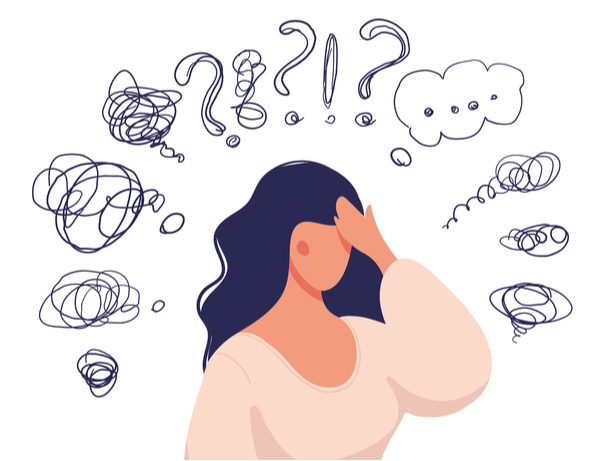

¿Qué es?
La frustración es una emoción que surge cuando una persona se encuentra impedida o dificultada en la realización de un objetivo o deseo. Ocurre cuando las expectativas de alguien no se cumplen, ya sea debido a circunstancias externas o a limitaciones personales. Esta emoción puede ser causada por obstáculos, dificultades, fracasos o la sensación de estar atrapado en una situación no deseada.
¿Qué hago si me siento frustradx?
Reconoce y acepta tus emociones: El primer paso para manejar la frustración es reconocer que la estás experimentando. Aceptar que es una emoción normal y válida te ayudará a abordarla de manera más efectiva.
Identifica la fuente de la frustración: Trata de identificar la causa específica de tu frustración. ¿Qué está impidiendo que alcances tus metas o deseos? Comprender la fuente te permitirá abordar el problema de manera más específica.
Respira y relájate: Cuando te sientas frustrado, toma un momento para respirar profundamente y relajarte. La respiración profunda puede ayudar a reducir la tensión y calmar tus emociones. Incluso puedes practicar técnicas de relajación como la meditación o el yoga.
Busca soluciones alternativas: Una vez que hayas identificado la fuente de tu frustración, intenta pensar en soluciones alternativas o en diferentes enfoques para abordar el problema. A veces, un cambio de perspectiva puede ayudar a encontrar una salida.
Pide apoyo: No dudes en buscar el apoyo de amigos, familiares o profesionales si sientes que no puedes manejar la frustración por ti mismo. Hablar con alguien de confianza puede proporcionarte una perspectiva diferente y consejos útiles.
